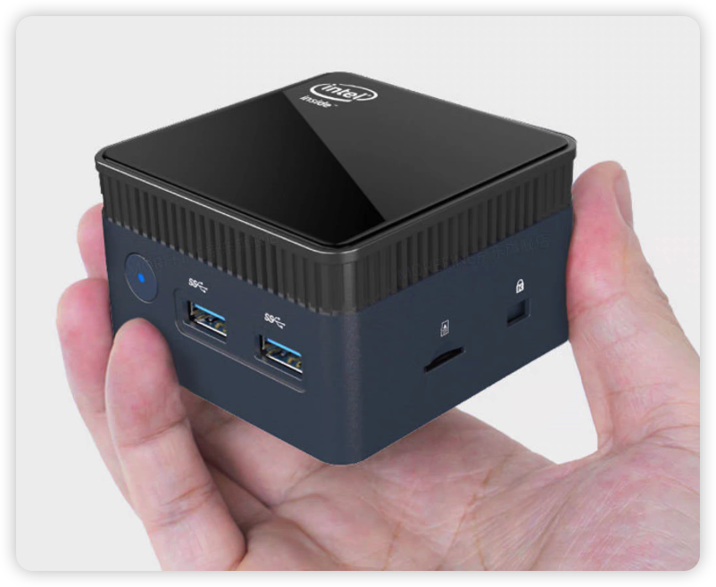

Customer service widget
Embed the yimsg UIKit into your website or admin panel with one line of code — visitors can start a temporary chat with support anytime, without registering or adding a friend.
Try the customer service widget →Deploy once. Run it standalone, or embed it anywhere.
On your own server, under your own domain — run a messaging system that's entirely yours.
将 yimsg 部署到自己的服务器、云主机或本地环境中，即可运行一套完整的即时通讯系统。 无需依赖第三方 IM 平台，用户、消息、文件和数据全部由自己掌控。
One deployment. Your complete IM system.
将 yimsg 嵌入现有网站、管理后台、SaaS 产品或企业业务系统。 无需重新开发消息连接、会话同步、联系人、群组、文件和消息状态。
import * as YimsgUIKit from '/uikit/yimsg-uikit.js';
const handle = YimsgUIKit.mount(document.getElementById('chat-host'), {
wsUrl: 'wss://your-domain.com/ws',
uploadUrl: '/api/upload',
theme: 'auto',
});示例代码，实际接入时请替换为你自己的域名、上传接口与容器节点；需先自行构建 UIKit 产物。
Deploy once. Embed everywhere.
用户可以直接使用 yimsg 提供的完整聊天界面，也可以基于开放能力构建自己的产品。
Use our UI, customize it, or build your own.
插上设备，连接网络，立即拥有自己的 IM 系统。 yimsg Box 预装完整服务，适合不想购买云服务器或手动部署的用户。

🔌 Plug into your LAN · Ready to goOne Box. Your Own IM.
The same chat capability works fully out of the box, embeds into your own product on demand, and adapts to both mobile and desktop.
Embed the yimsg UIKit into your website or admin panel with one line of code — visitors can start a temporary chat with support anytime, without registering or adding a friend.
Try the customer service widget →One agent can staff 6 support accounts on a single screen: when a small team shares one seat across multiple stores or channels, all 6 customer conversations reply directly, side by side, with no switching logins.
Try the six-panel workbench →Also works as a complete, standalone web IM app on its own — log in to send messages and manage contacts and groups, with no extra development needed.
Try the full enterprise IM →Friends and a complex org chart are unified into one contacts page — a sample organization with 4 department levels and about 76 people, all visible at a glance, with full bottom navigation between chat / contacts / settings.
Try the org contacts view →The client supports local persistent caching — refreshing the page or reconnecting after a dropped connection never loses your conversations. This demo signs you in automatically, no registration needed.
Try local persistence →The same UIKit automatically adapts to mobile and desktop layouts: bottom navigation with single-column switching on mobile, sidebar navigation with multi-column layout on desktop — no separate build per device.
Try the mobile / desktop views →